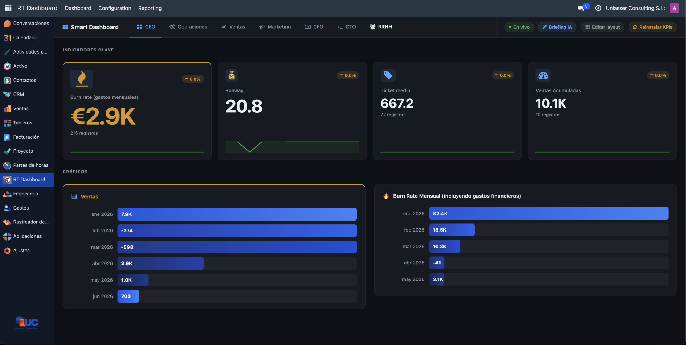

Real-time dashboards with AI and multi-channel alerts for Odoo. Department KPIs, push updates without page reload, AI-detected anomalies, and WhatsApp & Telegram notifications.
Odoo 16 · 17 · 18 · 19 · OPL-1Access from the main menu RT Dashboard. The system automatically creates one dashboard per department. KPI cards show the current value, variation vs the previous period, and a historical mini-chart.

Main dashboard — real-time KPI cards with status indicators, bar charts and historical area charts. Automatic updates without page reload.
⚡ LIVE badge confirms the bus.bus connection is active. Data updates every time the cron evaluates a KPI (default every 60 seconds).
Automatic updates via bus.bus — no F5 needed. Any data change is reflected instantly.
Predefined KPIs for CEO, Sales, Marketing, CFO, CTO, Operations and HR.
Anomaly detection, daily executive briefing and natural language KPI generator (Anthropic Claude).
Dashboard notifications, WhatsApp Business API and Telegram Bot when a KPI crosses a threshold.
Combine KPIs with expressions: {balance_57} / {burn_rate} to calculate runway, ratios and margins.
Visual emoji and Font Awesome selector. Accent color and icon size per KPI.
Menu → RT Dashboard → KPI Definitions
KPI definition form — identity fields, data source, thresholds and cached values.
| Type | When to use | Required fields |
|---|---|---|
| Standard | Aggregate a numeric field from any Odoo model | Model, Aggregation, Measure Field |
| Formula | Combine two or more existing KPIs with arithmetic | Formula expression ({kpi_name}) |
| Function | Description |
|---|---|
count | Count records (no Measure Field needed) |
sum | Sum of the specified field |
avg | Arithmetic mean |
max / min | Maximum / Minimum |
avg_monthly | Monthly average: SUM / distinct months. Ideal for burn rate. |
| Token | Replaced by |
|---|---|
{today} | Today's date (YYYY-MM-DD) |
{month_start} | First day of current month |
{year_start} | First day of current year |
{last_30d} | 30 days ago |
{last_90d} | 90 days ago |
{last_365d} | 365 days ago |
Formula KPIs combine the result of other KPIs using arithmetic expressions. They allow calculating ratios, financial runway, margins, etc.
Formula KPI — expression references the technical name of other KPIs in curly braces. Result is evaluated in real time.
balance_57, burn_rate, monthly_sales. Example formula: ({sales} - {costs}) / {sales} * 100 → margin %
Menu → RT Dashboard → Alert Rules
Each rule monitors a KPI and triggers notifications when it exceeds (or falls below) a threshold. Configurable cooldown to avoid notification spam.
Alert rule configuration — KPI + level (warning/critical) + channels + message with {value} token.
| Channel | Requirement |
|---|---|
| Dashboard (in-app) | None. Automatic banner on all open dashboards. |
| WhatsApp Business API token + destination phone number. | |
| Telegram | Telegram bot token + chat_id of the recipient. |
The daily cron generates a natural language summary with the most relevant KPIs for each department, highlighting anomalies and trends. Stored in RT Dashboard → AI Briefings and sent via configured channels.
sk-ant-). Get one at console.anthropic.com and configure it in Settings → Technical → System Parameters under key rt_dashboard.llm_api_key.
Menu → Create KPI with AI. Describe in plain text the KPI you need:
"last month's sales in euros, grouped by salesperson, confirmed invoices only"
Claude automatically configures model, aggregation, field and domain — ready to review and save.
The anomaly engine analyzes historical series of each KPI and notifies when a value deviates significantly from the historical average. Sensitivity is configurable per KPI.
odoo_rt_dashboard folder into your custom addons directory../odoo-bin -u odoo_rt_dashboard -d <database> --stop-after-init
?debug=assets to the dashboard URL or clear browser cache with Ctrl+Shift+R.
| Odoo Version | Community (CE) | Enterprise |
|---|---|---|
| Odoo 16 | ✅ | ✅ |
| Odoo 17 | ✅ | ✅ |
| Odoo 18 | ✅ | ✅ |
| Odoo 19 | ✅ | ✅ |
anthropic (install with pip install anthropic in the Odoo virtual environment). Required Odoo dependencies: base, web, bus, mail.{name} token in the formula.[] to see if there is data.Edit the KPI and change the Department field. The module automatically removes it from the previous dashboard and adds it to the new one.
The bus.bus connection is lost if the Odoo server restarts. Reload the page to reconnect.
The module uses Anthropic Claude. Get your key at console.anthropic.com. The key starts with sk-ant-.
You need a WhatsApp Business API account (Meta). Enter the token in the alert rule along with the destination phone number in international format (+34600123456).
Create a bot with @BotFather on Telegram and get the token. The chat_id is the numeric ID of the chat or group to receive the message.
| Field | Value |
|---|---|
| Vendor | Uniasser Consulting S.L. |
| Support email | info@uniasser.com |
| Website | www.uniasser.com |
| License | OPL-1 (Odoo Proprietary License) |
| Compatibility | Odoo 16, 17, 18, 19 — Community & Enterprise |